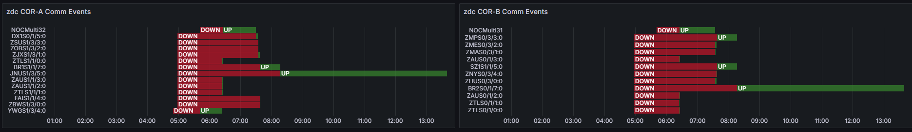
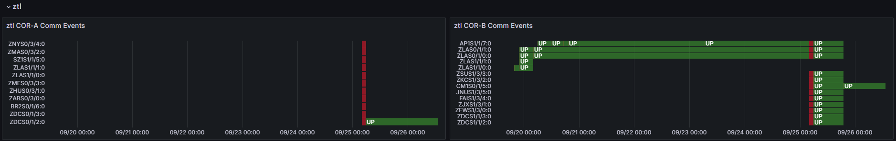
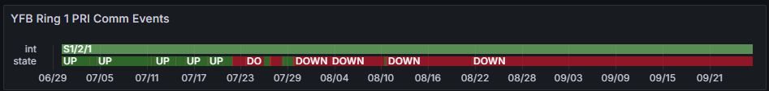

Weekly Highlights 20240918-20240925
9/17-9/19 - Circuit Installation for OTZ / Troubleshooting for BRW
SSM-WAAS-066 Circuits Outstanding
- 9/17 17:45 - BRW Ring 2 ALT comms fixed and active
- 9/18 23:57 - OTZ Ring 1 PRI comms connected after circuit validation
- 9/19 19:52 - OTZ Ring 2 ALT comms connected;
continued troubleshooting PRI line but was
unable to make it green; final
connection at 9/19 21:52
- Currently the wrong circuit (*508) is being used for OTZ Ring 1 PRI and *509 is connected on OTZ Ring 1 ALT
- FTI is troubleshooting the *509
circuit --
ISR 0924-0866ref LIR 69611621 - The circuits will need to be swapped for proper avoidance
- 9/19 21:56 - Reset ZLA COR-B to troubleshoot OTZ PRI
9/18 - CM1 Intrusive Maintenance
- 9/18 07:03 - GUS Switchover - S15
- BR1 to Primary / CM1 to Backup for
S/A PM, KPA cleaning and Antenna maintenance-- ref LIR 841733832 - 9/18 15:29 - CM1 GUS to Maintenance for
PM, KPA cleaning and Antenna maintenance; restored to Backup at 9/18 23:15
9/19 - ZAN WRE-C Freq Std Replaced
- 9/19 00:32 - ZAN WRE-C to Maintenance Mode for Frequency Standard replacement requested by Field Support; unable to initialize ZAN WRE-C...
- 9/19 17:28 - ZAN WRE-C Freq Std configured; restored to Normal at 9/19 18:30
9/21 - ZMP Power Panel Work
- 9/21 02:58 - ZMP WREs taken down one at a time for
power panel work
project JCN code 2000441-- ref LAD 867885024- 9/21 02:58 - ZMP WRE-A to Maintenance; restored to Normal at 9/21 05:22
- 9/21 05:31 - ZMP WRE-B to Maintenance; restored to Normal at 9/21 08:32
- 9/22 02:45 - ZMP WRE-C to Maintenance for power panel work; restored to Normal at 9/22 05:49
9/23 - CM1 KPA Maintenance
- 9/23 14:17 - CM1 GUS to Maintenance Mode to
perform intrusive KPA cleaning Antenna maintenance; ref LAD 70465121; Operators attempted to push back to Verification at 9/23 14:21 and the GUS Faulted; Control Powered and restored to Backup at 9/23 15:40
Various Comm Impacts
* Only captures major / long-term comm outages
Mexico Comms
YFB Comms
- 9/18 10:24 - YFB Ring 2 comms down hard; line cleared at 9/18 10:42 (~18m)
Other Sites
- 9/18 10:23 - CM1 Ring 1 ALT / Ring 2 PRI comms down hard; line cleared at 9/18 10:42 (~19m)
- 9/18 10:24 - YFB Ring 2 comms down hard; line cleared at 9/18 10:42 (~18m)
- 9/19 04:57 - Major comm event centered at ZDC
affecting both Core Routers --
MR-183942Cref LIR 863818524; all comms restored at 9/19 08:16 (~3h 18m)

- 9/20 02:47 - ZDV Ring 2 ALT + ZMP Ring 2 ALT comms down hard; both lines cleared at 9/20 06:15 (~3h 26m)
- 9/23 02:07 - ZDV Ring 2 ALT + ZMP Ring 2 ALT comms down hard; both lines cleared at 9/23 03:33 (~1h 25m)
- 9/25 03:04 - MTP Ring 1 comm line restored; mostly down since 9/11 (~2 weeks)
- 9/25 04:02 - Comm event at ZTL affecting multiple
comms on both rings simultaneously;
MR-194385 ZTL WCNS lines OTS for L3H relocating ZTL POP2 & AT&T relocating Metro Ring-- ref LIR 867401224; comm lines cleared ~9/25 05:48 (~1h 46m)

- 9/25 18:25 - HNL Ring 1 ALT / Ring 2 PRI comms down hard...
YFB Ring 1 PRI
- 7/29 17:01 - YFB Ring 1 comms flapping then down hard at 7/29 19:10; loopback testing at 7/30 04:06...
- 7/31 05:08 - YYR Ring 1 down hard + loopback testing impacting YYR Ring 1 and YFB Ring 1 to troubleshoot YFB Ring 1 comms down since 7/29; last event for YYR Ring 1 cleared at 7/31 09:41 (~16389 seconds) -- YFB Ring 1 still down hard...
- 8/10 04:09 - YFB Ring 1 comms UP temporarily; started flapping again at 8/10 08:27 then down hard at 8/10 11:29...

List of current offline WREs
List of current offline WREs -- ref WAAS Status Monitor
All Depot shipments to Mexico are halted until the customs process can be finalized
- MMX WRE-C - 5/15-... - Processor failed and could not be restored
- MPR WRE-B - 5/3-... - Inits failing -- looks like a bad freq std; due to shipping issues, there is no spare Freq Std and no ETA to recover WRE-B...
5/11/23-... - MX Ring 2 Satcom Upgrade
- 5/11/23 17:01 - MX Ring 2 SatCom upgrade begins; MX Ring 2 OFFLINE until upgrade troubleshooting is complete
MX WAAS Sites comm upgrades in progress:
- 10/27/23 - Frequentis has delivered to Tijuana, needs to be connected to FTI delivery
- 11/2/23 - FTI has initiated coordination with Tijuana to install and test direct connection to Frequentis -- MMD Test on 12/6/23
- 2/15/24 - MMX Ring 2 successfully connected through Tijuana to ZLA COR-B!
- 6/5/24 - Telco issue localized to Tijuana for 4 out of 5 circuits; MSD appears to have issue at ZLA
- 8/6/24 - MMD Ring 2 successfully connected!
- 9/19/24 - Telco issues at TJX and MSD issue at ZLA resolved; MTP Ring 2 successfully connected!
3 of 5 sites are currently connected through (only enough V.35 adapters for 3x connections), but zero UDP data on Ring 2
FTI-Harris working with Tijuana to deliver new SDP termination to remove V.35 connection and connect directly to satcom

Major Events


Core I/F Dashboard (1/2)

Comm Events - ZLA / ZTL

Core I/F Dashboard (2/2)

Comm Events - ZDC / ZAU

Mexico Comm Status